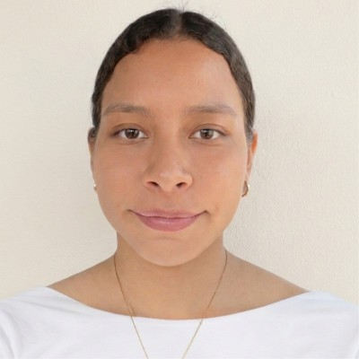

"Romina demostró compromiso, responsabilidad y gran capacidad analítica durante el desarrollo de proyectos."
Ana López — Coordinadora de Marketing Digital

Estudiante de Ingeniería en Ciencias de la Computación
ESPOL - Guayaquil, Ecuador
Teléfono: (+593) 998022021
Correo: rominabrownv@gmail.com
Estudiante de Ingeniería en Ciencias de la Computación en ESPOL, con formación en análisis de datos y sistemas de información. Actualmente desarrollando competencias en Excel, SQL, Power BI y Python para aplicarlas en entornos prácticos y colaborativos.
Pasantía en Desarrollo Web
Guayaquil, Ecuador
09/02/2026 – 08/05/2026
| Proyecto | Descripción | Tecnologías | Repositorio |
|---|---|---|---|
| Análisis de rotación laboral | Análisis exploratorio de datos sobre rotación laboral utilizando un dataset de empleados para identificar factores que influyen en la renuncia laboral. | Python, Pandas, NumPy, Jupyter Notebook | Ver repositorio |
| Rastreo de Vehículos | Sistema desarrollado en Java para rastreo y monitoreo de vehículos mediante programación orientada a objetos. | Java, POO, GitHub | Ver repositorio |
| Base de Datos Esports | Diseño de base de datos relacional para competencias de esports aplicando normalización e integridad referencial. | SQL, MySQL, Modelado de BD | Ver repositorio |
"Romina demostró compromiso, responsabilidad y gran capacidad analítica durante el desarrollo de proyectos."
Ana López — Coordinadora de Marketing Digital
"Trabajar con Romina fue una experiencia positiva gracias a su iniciativa y habilidades técnicas."
Carlos Mendoza — Desarrollador Backend
"Destacó por su aprendizaje rápido y colaboración efectiva dentro del equipo."
Sofía Ramírez — Analista de Datos
URL del video: https://www.youtube.com/watch?v=ysz5S6PUM-U